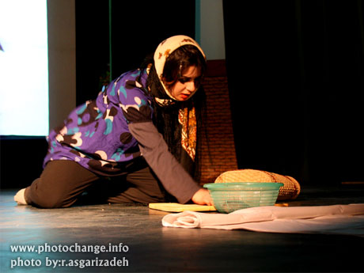

|
|

گزارشی از هنر اعتراضی
تئاتر ايران
روز آنلاین / علي قلي پور
جمعه21 تیر 1387
در تئاتر ايران نقش دولت همواره بيش از هنرمندان آن است، بودجه محدودي كه به سختي پاسخگوي گروههاي نمايشي است، به سادگي جريان تئاتر را با تصميمات، سلايق و برنامهريزيهاي دولت همسو ميكند. در چنين فضايي توليد مستقل و بدون اعمال سليقه كارمندان و كارگزاران تئاتر در بدنه دولت كاري دشوار و تا حدودي غير ممكن است و اگر بخواهيم نشاني تئاتر مستقل ايران را بدانيم بايد به سراغ گروههايي برويم كه خارج از اين حصار دولتي فعاليت ميكنند.
حيات تئاتر در حواشي يك جريان دولتي
در تئاتر ايران نقش دولت همواره بيش از هنرمندان آن است، بودجه محدودي كه به سختي پاسخگوي گروههاي نمايشي است، به سادگي جريان تئاتر را با تصميمات، سلايق و برنامهريزيهاي دولت همسو ميكند. در چنين فضايي توليد مستقل و بدون اعمال سليقه كارمندان و كارگزاران تئاتر در بدنه دولت كاري دشوار و تا حدودي غير ممكن است. به همين دليل جريان رسمي تئاتر با برنامههاي خود دورنماي تحولات در تئاتر كشور به سادگي قابل پيشبيني كرده و محدودهاي را براي آن ترسيم ميكند. كمبود فضاي اجرايي براي گروههاي تئاتري مزيد برعلت شده تا همواره با تنها نهاد حامي خود، يعني مركز هنرهاي نمايشي كمال همكاري را داشته باشند. اين نكته را هم نبايد از نظر دور داشت كه چشم قريب به اتفاق هنرمندان تئاتر به همين جريان رسمي و دولتي تئاتر است و به كمتر اثري خارج از محدوده «تئاتر شهر» و تالار«مولوي» عنايت دارند. اما اگر بخواهيم نشاني تئاتر مستقل ايران را بدانيم بايد به سراغ گروههايي برويم كه خارج از اين حصار دولتي فعاليت ميكنند.
اين گروهها متشكل از هنرمندان نامآشناي تئاتر نيستند، از سوي ديگر هدف آنها هم صرفا توليد يك محصول هنري نبوده و بر خلاف توليدات جريان رسمي، از تئاتر به منظور ديگري بهره ميگيرند. ميتوان سه نمونه در تئاتر ايران شرح داد كه حكايت از حيات تئاتر، بيرون از جريان رسمي دارد. بدون شك غير از اين سه نمونه ميتوان نمونههاي ديگري را هم برشمرد، ملاك انتخاب در اين نوشته اجرا شدن و به سرانجام رسيدن تلاشهاي يك گروه است. به همين دليل كوششهاي ديگري كه در نيمه را متوقف شدند در كنار اين نمونهها نيامده است.
نمايش تاببازي، نه!

اولين اتفاق در 22 اسفند سال گذشته رخ داد. اعضاي يك گروه تئاتر كه خود را اعضاي «كميته هنري كمپين يك مليون امضاء» معرفي كردند، در دانشكده اقتصاد دانشگاه علامه نمايشي را به نام «تاببازي، نه!» را به صحنه بردند كه تابلوهاي کوتاهي از زندگي «راحله زماني» بود: كسي كه در 15 سالگي ازدواج كرده بود و در دي ماه سال گذشته به دليل قتل شوهر خود محكوم به اعدام شده بود. اعضاي كمپين يك مليون امضاء كه تلاش و پافشاري بسياري براي اجرا نشدن حكم اعدام «راحله زماني» داشتند، ناكام ماندند و سرانجام اين حكم اجرا شد. حال تئاتر ابزاري شده بود براي تصوير كردن زندگي او كه به عقيده اعضاي كمپين مستحق اجراي اعدام نبود. در اجراي آنها توليد تئاتر به مثابه كالايي هنري، ماحصل مورد علاقه نيست، بلكه تئاتر رسانهاي است كه وظيفه انتقال آرا و عقايد اين گروه را بر عهده دارد. چيزي كه در تئاتر رسمي امكان حضور ندارد، به شكلي غير رسمي در يك دانشگاه اجرا ميشود و نميتوان حضور آن را به عنوان يك تئاتر با هدفي غير تئاتري ناديده گرفت؛ اين ناديده انگاشته نشدن ارتباطي با اهداف آنها ندارد، بلكه ذكر آن در اين نوشته تنها از منظر فرم اعتراض مد نظر قرار گرفته است. غير تئاتري بودن و ماهيت معترض داشتن اجرايي از اين دست، خط فارق آن دسته از آثاري است كه هر سال زيرعنوان «تئاتر دانشجويي» در جشنوارهاي به همين نام اجرا ميشوند.

نمايش «تاب بازي،نه!» چنانچه در خبرها آمده بر اساس طرحي از نسيم خسروي مقدم و آزاده فرامرزيها بود. آنها به همراه اجراي نمايش از روايتهاي مستندي هم كه مفيد ميدانستند استفاده كرده و اجراي موثق و متكي به مداركي را براي دانشجويان دانشكده اقتصاد اجرا كردند. با توجه به كم بودن تماشاگران تئاتر در ايران، كمتر تماشاگري حاضر به پذيرش نمايشي است كه هدفي جز سرگرمي مخاطب داشته باشد. اين نوع آثار به شدت نياز به مشاركت تماشاگر و تغيير نقش او از تماشاگر به بازيگر و يا اجرا كننده دارند، به اين معني كه اگر آنها صرفا تماشاگر نمايش باشند، به سختي آن را ميپذيرند، يكي از راههاي انتقال پيام به مخاطب اين نوع آثار درگير كردن او در كنش روي صحنه است، و براي مخاطب اغلب آن كنشي بر حق است كه به نوعي در رخ دادن آن سهيم باشد و يا دست كم بخشي از حضور موثر خود را در آن بيابد. با اين همه اين حركت مستقل از بدنه تئاتر رسمي اتفاق جالبي براي علاقمندان به جريان تئاتر غير رسمي كشور است.
اتفاق و يا به عبارت بهتر نمونه دوم گرد هم آمدن گروهي از مهاجران افغاني به كارگرداني «حميد پورآذري» بود كه توانست نمايش «قصه مردي كه لب نداشت» را بر اساس همان شعر شهره احمد شاملو آماده اجرا كند. اين نمايش براي اجرا در تالار مولوي بازبيني شده و كارگردان آن منتظر پاسخ مسئولين تالار مولوي است. نا گفته نماند كه تمرين آنها در دروازه غار و شوش - فضايي كه در اختيار انجمن حمايت از كودكان كار است- انجام شده و در مراسم روز جهاني كودك اين انجمن نيز اجرا شده است. به كارگيري افرادي كه در حاشيه جامعه حضور دارند، براي اجراي يك نمايش، نخستين تاثير چشمگيرخود را بر اعضاي آن گروه نشان ميدهد. آنها با اين كار حضور خود را به جامعه اعلام ميكنند و از افراد اين جامعه ميخواهند كه آنها را به عنوان اعضاي خود بپذيرد. از سوي ديگر مخاطب هم اين حاشيهنشينهاي جامعه را در فرايند توليد فرهنگي و عرضه محصول ديده و ميتواند نقش تازهاي براي آنها قائل شود.
نمايش پلکان
آخرين نمونه اين نوشته اجراي يك گروه نابينا ازنمايشنامه «پلكان» نوشته مرحوم «اكبر رادي» كه شنبه هفته گذشته با چهار روز اجرا در فرهنگسراي هنر (ارسباران) به كارخود پايان داد. بازيگران اين گروه كه برخي نابينا و برخي كم بينا بودند در گفتگو با نگارنده تاثير اين كار را بر زندگي شخصي خود بسيار مفيد ميدانستند، «غفار تقيخاني»، بازيگر نمايش «پلكان» كارشناس نابيناي تربيت معلم، كه خود را مربي تئاتر نابينايان هم معرفي كرد، گفت: «تا وقتي كه منزوي باشي كسي تو را به جمع راه نميدهد، من در اين كار شركت كردن تا بگويم محدوديت مانعي براي حضور من در جامعه نيست، در صورتي كه اگر كاري نكنيم بايد مهربانيهاي نابجا و ترحم ديگران را تحمل كنيم». «راضيه يگانه» بازيگر ديگر اين نمايش از اين اجرا چنان به شعف آمده بود كه گفت: «به قدري خوب بود كه تصميم گرفتم بازيگري را به عنوان شغل آينده خود انتخاب كنم».
شايد تاكنون شعارهاي بسياري را با همين مضامين از زبان بسياري از نابينايان شنيده باشيم، اما ديدن تجربه روي صحنه آمدن آنها رنگي از آن شعارها ندارد. آنها با تلاش بسيار و به زحمت فراوان خود و اشياء را روي صحنه پيدا ميكنند تا به قول يكي از بازيگران اين نمايش بگويند: لطفا همان طور كه به آقاي قطبالدين صادقي سالن ميدهيد به ما هم در مركز تئاتر حرفهاي جايي براي اجرا بدهيد.» البته نكته مهمي كه در اين اجرا نبايد از نظر دور داشت مسئله وجود «كارگردان» است.
حضور كارگردان در گروهي نابينا و يا در هر گروهي كه با ناتوانان جسمي تئاتر كار ميكند، ميبايست كه از اصولي خاص پيروي كند، در غير اين صورت اين خطر هست كه كارگردان عقايد هنري و سلايق خود را در كاري دخيل كند كه هدف غائي آن تنها توليد يك اثر هنري نيست. و حتي ممكن است مانع بروز خلاقيت فردي بازيگران براي اثبات خود به عنوان هنرمنداني با توانايي برابر با افراد سالم شود. در اين اجرا كارگردان به آن معني كه در يك گروه حرفهاي و رسمي هست، فاقد معني و توجيه است، نميتوان تصور كرد كه يك كارگردان هنري و علاقمند به حضور در جريان رسمي تئاتر كشورعدهاي نابينا را با امتياز توانايي بينايي خود گرد هم آورده و با آنها نمايشي به صحنه برده است كه تنها خود را در مركز اين توليد هنري قرار دهد، به همين علت بيراه نيست كه بگوييم حضور كارگردان راه رفتن بر لبه شمشير است.
اما معرفي يك نفر به عنوان سرپرست گروه و سامان دادن اجرا به نحوي كه بر اساس خلاقيت فردي بازيگران باشد، همه اين احتمالات را از ميان خواهد برد. احتمالاتي كه در اجراي گروه «پلكان» با حضور شخصي به نام «كارگردان» از ميان نرفت. نا گفته نماند كه اكثر بازيگران اين گروه داراي مدارك كارشناسي و كارشناسي ارشد در رشتههايي چون روانشانسي، علوم سياسي، زبان فرانسه و... بودند.
تا كنون در ميزگردها و نشستهاي بسياري به تقابل تئاتر دولتي و خصوصي پرداختهاند، هزاران بحث بي محل براي درمان بيماريهاي تئاتر پيشنهاد كردهاند، و اين روند ميزگرد و نشست و مصاحبه همچنان دور باطلي است كه گوئي به موازات مشكلات ادامه خواهد داشت. توجه به جريانات غير دولتي و غير رسمي همه اين به گرد خود چرخيدنها را از ميان خواهد برد، چون با پرداختن و توجه به اين جريانات ديگر تنها مكان اجراي تئاتر و تنها قلب تپنده تئاتر ايران را ساختمان «تئاتر شهر» نميداند. متاسفانه گروههاي نمايشي هم براي رسيدن به اين ساختمان گرد كه خيل مخاطبان رسمي را به خود ميخواند، در رقابت تنگاتنگي با هم قرار دارند كه سرانجام هم روشن نيست كه ستاره اقبال كدام كارگردان و يا كدام گروه در اين فضاي نيمه جان، كورسوئي براي اعلام حيات جريان رسمي تئاتر دارد.